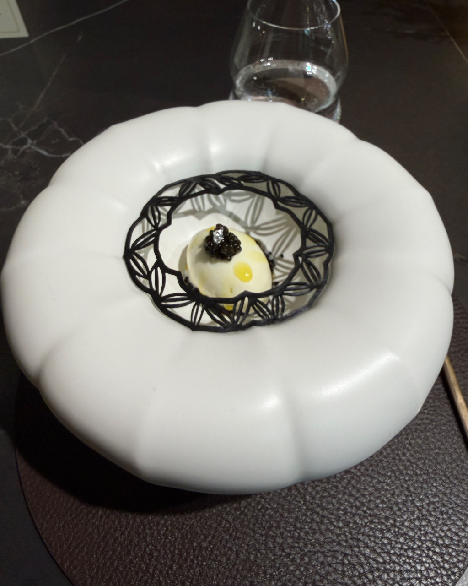
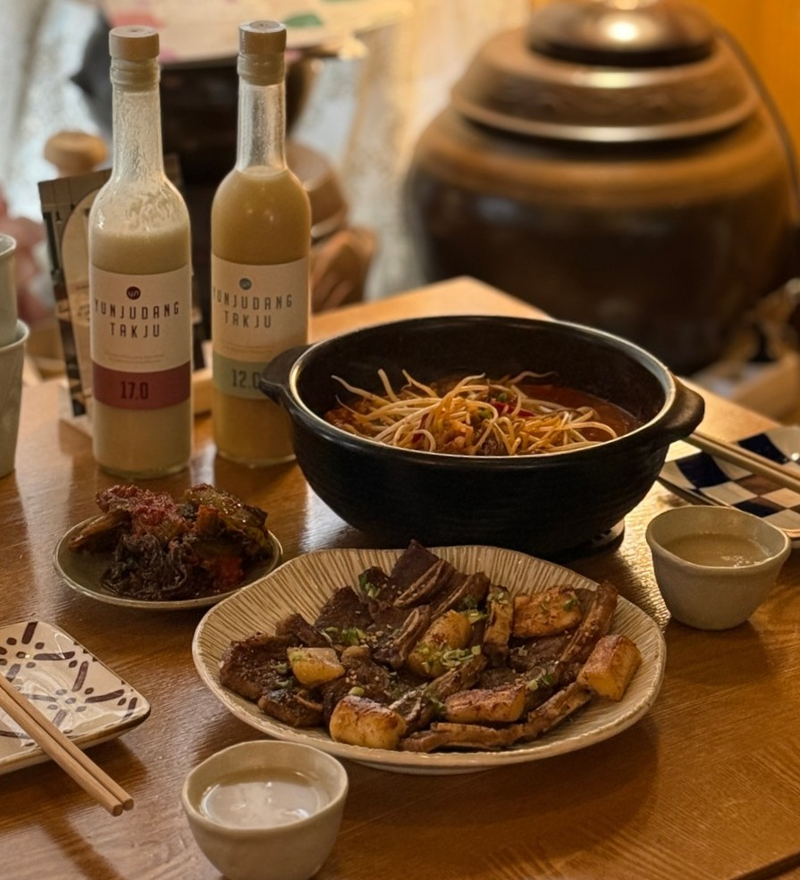
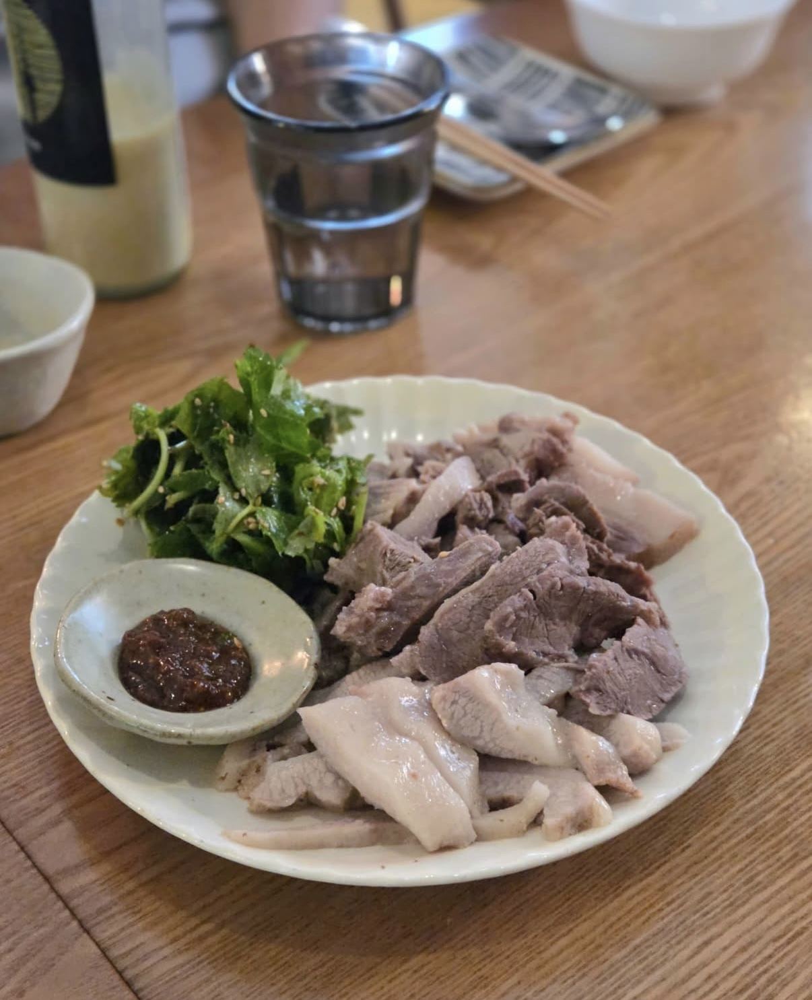
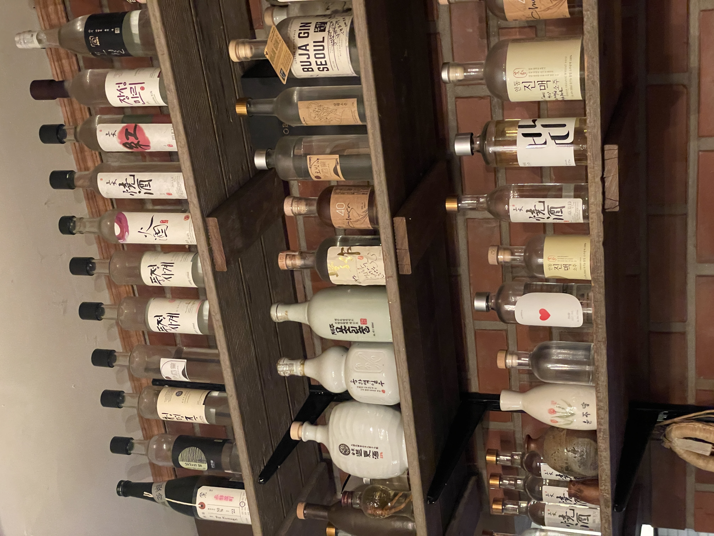
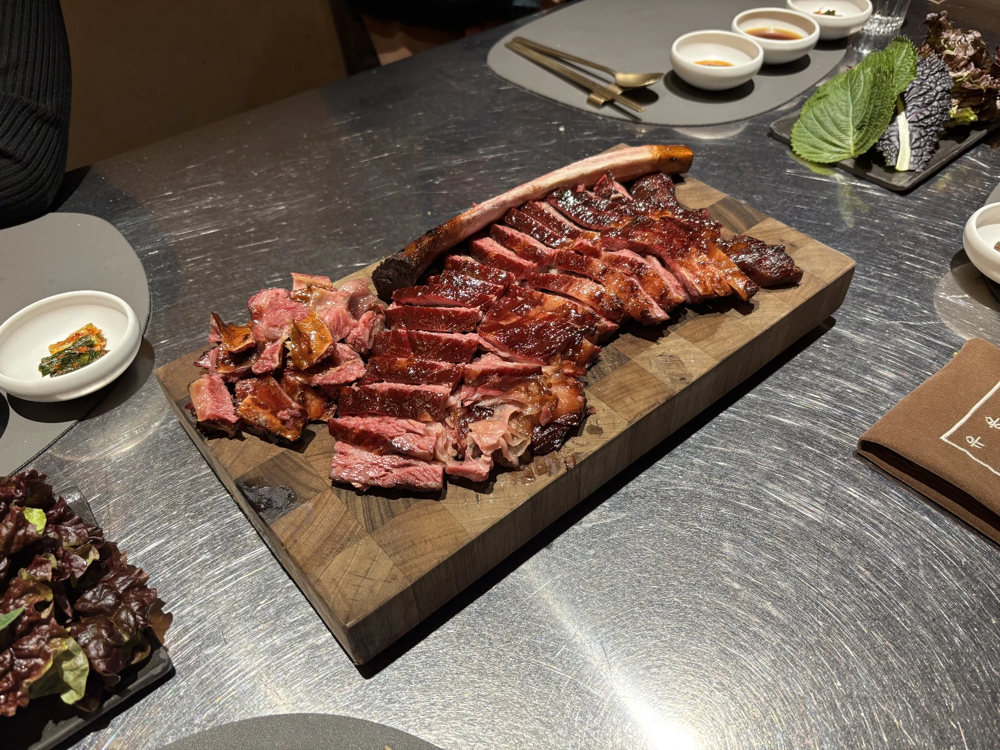

Yongsan-gu District


테이블포포
이탈리아
테이블포포는 한남동의 파인다이닝 맛집으로, 태안에서 온 신선한 해산물과 채소를 활용한 런치·디너 코스를 제공합니다.
특히 쫄깃한 오징어와 문어 라구, 삼식이 생선 요리 등 개성 있는 메뉴가 호평을 받고 있습니다


소울SOUL
한식
소울은 해방촌의 숨은 보석 같은 한식 파인다이닝으로, 미쉐린 가이드 1스타를 획득한 곳입니다.
런치 코스와 와인 페어링 메뉴가 인기 있으며, 특히 한입 요리와 디저트에서 독창적인 맛을 선보입니다.




윤주당
한식
해방촌 윤주당은 전통주와 한식을 즐길 수 있는 아늑한 분위기의 술집입니다.
테이스팅 코스인 주모의 한상과 다양한 전통주 페어링이 인기 메뉴입니다.
막창순대, 꽈리고추 목살구이, 들기름 국수 등 정성스러운 안주들이 맛과 품질 모두 우수하다는 평가를 받고 있습니다


바베큐연구소장
육류,고기요리
유용욱바베큐연구소는 고급 바베큐 코스를 프라이빗하게 즐길 수 있는 레스토랑입니다
대표 메뉴인 스모크 바베큐 플래터는 다양한 부위의 고기를
특히 훈연 향이 배어있는 고기와 특제소스의 조화가 뛰어나며, 남은 음식은 포장해갈 수 있어 편리합니다.